タロットの世界へようこそ！
0.愚者
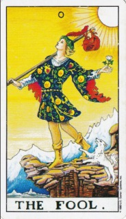
【正位置】
常識に囚われない、自由、あらゆる可能性を持ち合わせている、安定していない
【逆位置】
計画性のなさ、社会性に欠ける、自分勝手、行き当たりばったり
1.魔術師
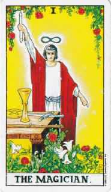
【正位置】
やる気に満ちている、有言実行、明確な目的がある、若さ
【逆位置】
やる気がなくなる、消極的、スタートできない、ズル賢い
2.女教皇
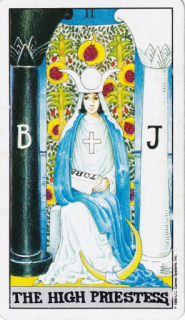
【正位置】
冷静、観察、受動的、きちんとしている、妥協しない
【逆位置】
神経質、きちんとしすぎている、白黒はっきりつけすぎる、妥協できない、自暴自棄
3.女帝
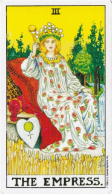
【正位置】
のんびり、リラックス、五感が満たされている、快適、何の心配もない
【逆位置】
のんびりし過ぎてだらける、面倒くさくなる、放任、怠惰
4.皇帝
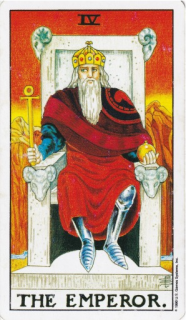
【正位置】
責任、現実的、物質的、保守的、堂々としている
【逆位置】
自分の決断や方針に自信がない、弱々しく見える、威張りすぎ、頑固、人のやり方を認めない
5.法皇
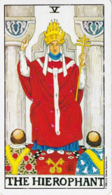
【正位置】
尊重、礼儀、しきたり、形式的、上下関係、法律を守る
【逆位置】
上下関係がうまくいっていない、ルール・マナーを守らない、不信感、間違ったことを教える
6.恋人
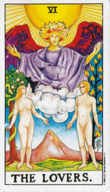
【正位置】
安心安全な環境、仲が良い、責任がない、憧れ、理想
【逆位置】
世間知らず、優柔不断、誘惑に乗ってしまう、自律への第一歩
7.戦車
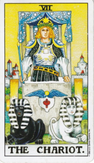
【正位置】
情熱的、自立心、野心がある、スピード感がある、目標がはっきりしている
【逆位置】
暴走、暴力的、制御不能、進むのが怖くなる
8.力
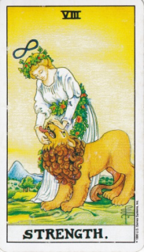
【正位置】
忍耐、自発的、外柔内剛、外堀から埋める、達成できる
【逆位置】
挫折感、ビクビクしている、達成できない、困難な状況に負けてしまう
9.隠者
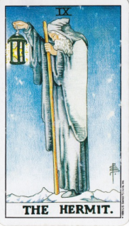
【正位置】
探究心、知恵・知識、自分の理想だけを追い求めている、ひとりでいたい
【逆位置】
自分をごまかす、隠し事、自分の信念を貫けない、拗ねる、現実逃避
10.運命の輪
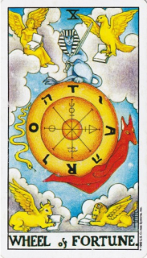
【正位置】
スムーズにことが運ぶ、滞りない、タイミングが合う、チームワーク、チャンスが来る
【逆位置】
スムーズにことが進まない、停滞気味、チャンスがやってこない、自然消滅
タロットの世界 トップページへ戻る
光玲のページへ戻る